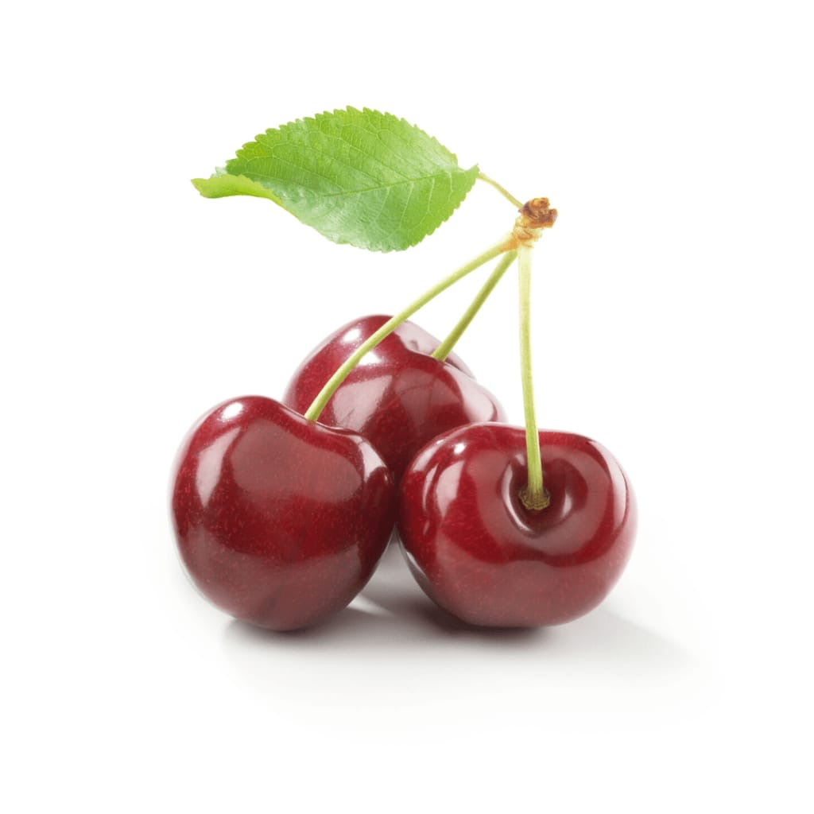
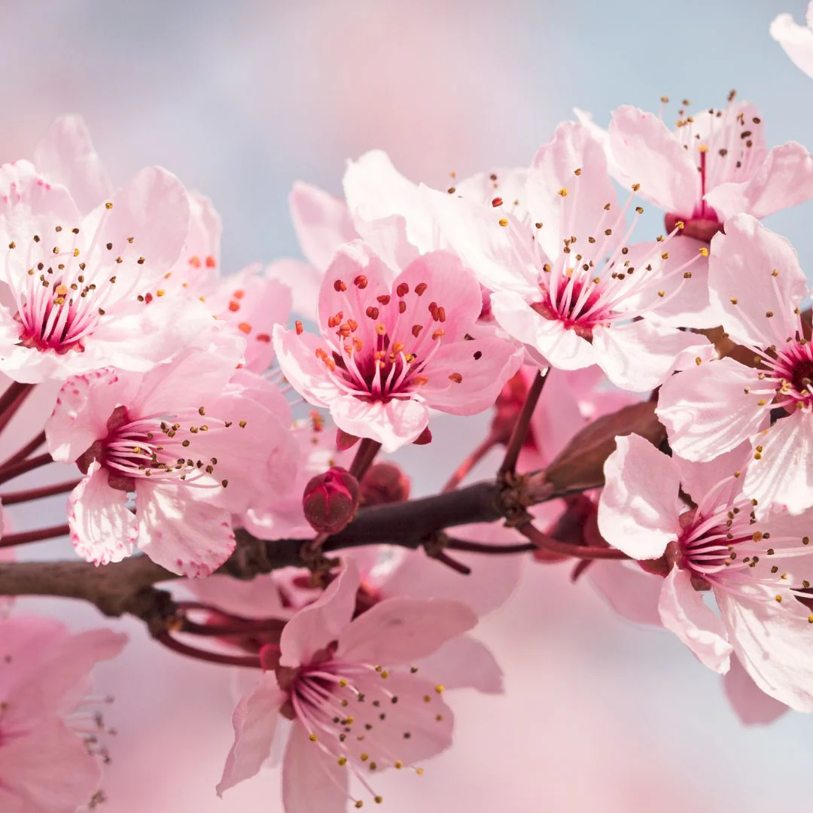

La cerise vient généralement par paire.
Saison de pousse
Sa saison est très courte, de fin mai à la mi-juillet. Très dépendante des intempéries, la récolte de ce fruit très fragile demande beaucoup d'organisation
Zone de pousse
Le cerisier, originaire d'Europe, pousse en tous climats, en plein soleil. Peu exigeant sur la nature du sol, il craint seulement les terres trop humides et imperméables.
La cerise
Infos générales
La cerise est le fruit comestible du cerisier. Il s'agit d'une drupe, de forme sphérique, de couleur généralement rouge plus ou moins foncé jusque noire, plus rarement jaune. Sa fleur est généralement blanche, même si on trouve aussi des variétées maginfique de cerisier du japon avec des fleurs roses.

Fleur de cerisier japonnais
Ses Apports
La cerise contient de bonnes quantités de :
- vitamines C A et E, qui sont également reconnues efficaces dans la prévention de certains cancers.
- mélatonine, une hormone qui contribue à régulariser le cycle du sommeil.